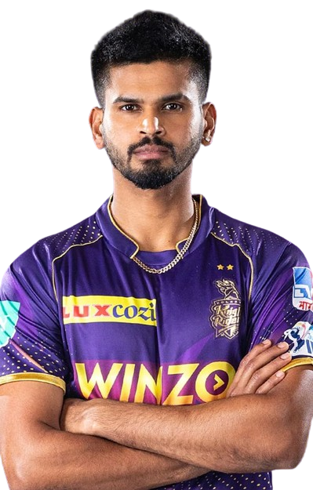

Kolkata Knight Rider's
Kolkata Knight Riders (KKR) is a prominent cricket franchise in the Indian Premier League (IPL), representing the city of Kolkata, West Bengal, India. Established in 2008, KKR quickly became a force to be reckoned with under the ownership of Bollywood superstar Shah Rukh Khan, actress Juhi Chawla, and her spouse Jay Mehta. The team's distinctive purple and gold attire has become iconic in the IPL. KKR has had its fair share of successes, clinching the IPL title in 2012 and 2014. Led by influential captains like Gautam Gambhir and Dinesh Karthik, KKR boasts a talented lineup of players, including international stars like Andre Russell, Sunil Narine, and Eoin Morgan.
